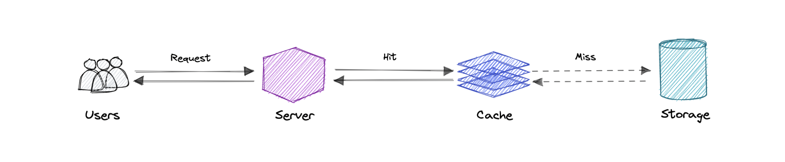
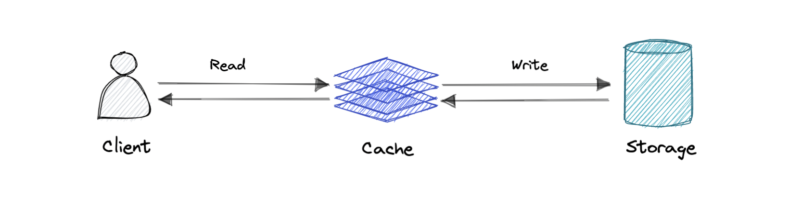
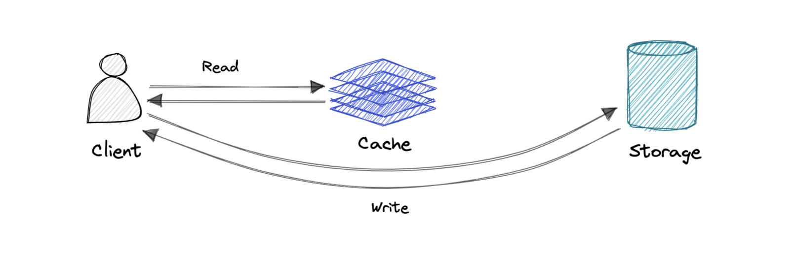
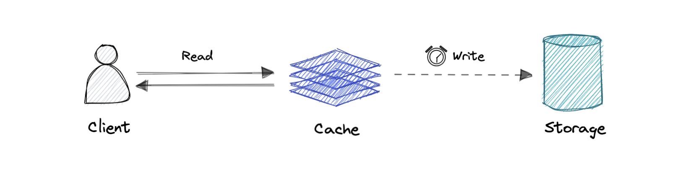
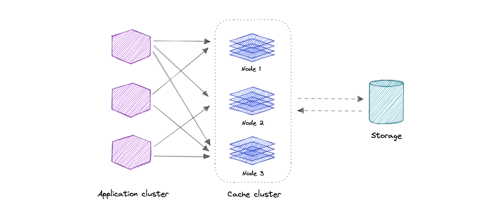
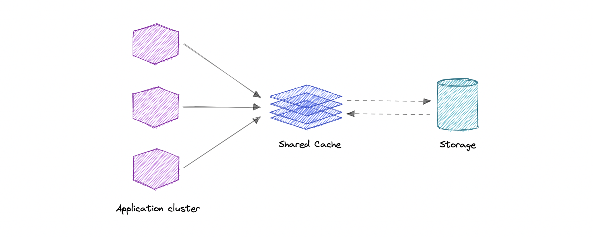
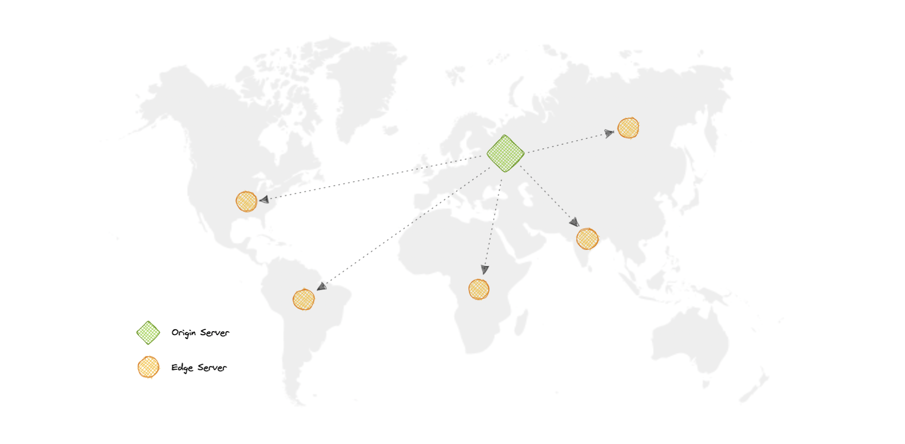
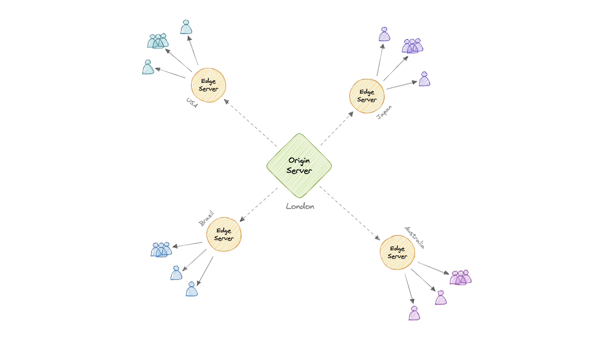
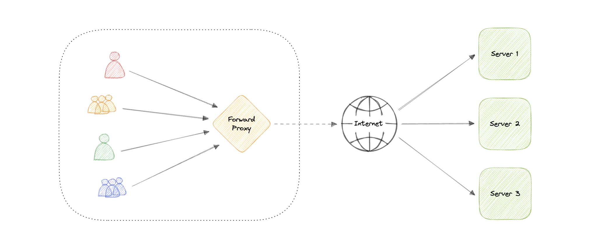
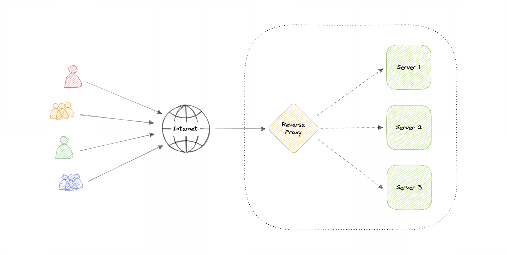

Caching, CDN & Proxy
Ba "vũ khí" tăng tốc & giảm tải hệ thống: cache (lưu tạm dữ liệu nóng), CDN (phân phối nội dung tĩnh toàn cầu), và proxy (trung gian giữa client và server).
Caching
Mục đích chính: tăng tốc truy xuất dữ liệu bằng cách giảm nhu cầu chạm vào tầng lưu trữ chậm hơn. Cache đánh đổi dung lượng lấy tốc độ — chỉ lưu một tập con dữ liệu tạm thời. Dựa trên nguyên lý locality of reference: "dữ liệu vừa được yêu cầu nhiều khả năng sẽ được yêu cầu lại".

Cache hit: tìm thấy & phục vụ từ cache. Cache miss: không có trong cache → phải lấy từ nguồn rồi ghi vào cache. (Hot/warm/cold cache mô tả tốc độ đọc tùy dữ liệu ở L1/L2/L3...)
Chiến lược ghi (Cache write / invalidation)
| Chiến lược | Cách hoạt động | Ưu / Nhược |
|---|---|---|
| Write-through | Ghi vào cache và DB đồng thời. | + Nhất quán hoàn toàn / − Latency ghi cao. |
| Write-around | Ghi thẳng vào DB, bỏ qua cache. | + Giảm latency ghi / − Tăng cache miss khi đọc lại. |
| Write-back | Ghi vào cache trước, sync DB bất đồng bộ. | + Throughput ghi cao / − Rủi ro mất dữ liệu nếu cache chết. |



Chính sách loại bỏ (Eviction)
FIFO (vào trước ra trước) · LIFO (vào sau ra trước) · LRU (ít dùng gần đây nhất bị loại — phổ biến nhất) · MRU (dùng gần đây nhất bị loại) · LFU (ít dùng nhất bị loại) · RR (loại ngẫu nhiên).
Khi truy cập cache lâu ngang truy cập nguồn; khi request ít lặp lại / ngẫu nhiên cao; khi dữ liệu thay đổi liên tục (cache sẽ luôn out-of-sync). Cache không phải lưu trữ vĩnh viễn — nó nằm ở bộ nhớ dễ mất (volatile).
Use cases: Database caching, CDN, DNS caching, API caching. Phân loại: Distributed cache (gộp RAM nhiều máy), Global cache (một cache dùng chung). Ví dụ: Redis, Memcached, Amazon ElastiCache.


CDN (Content Delivery Network)
Là nhóm server phân tán theo địa lý, phối hợp để phân phối nội dung tĩnh nhanh (HTML/CSS/JS, ảnh, video). Origin server giữ bản gốc; edge servers rải khắp thế giới cache nội dung gần người dùng.


| Loại | Cách hoạt động | Phù hợp |
|---|---|---|
| Push CDN | Bạn tự upload nội dung lên CDN khi có thay đổi. | Site traffic thấp / nội dung ít thay đổi. |
| Pull CDN | CDN tự kéo nội dung từ origin khi có request (cache miss). | Site traffic cao, ít bảo trì. |
Lợi ích: tăng availability/redundancy, giảm chi phí băng thông, cải thiện bảo mật & hiệu năng. Nhược: phí cao với traffic lớn, một số quốc gia/tổ chức chặn CDN, có thể bất lợi nếu khán giả ở nơi không có edge. Ví dụ: CloudFront, Google Cloud CDN, Cloudflare, Fastly.
Proxy
Là trung gian (phần cứng/mềm) giữa client và server — lọc, log, hoặc biến đổi request (thêm/bớt header, mã hóa, nén).
| Forward Proxy | Reverse Proxy | |
|---|---|---|
| Đứng trước | Nhóm client | Một hoặc nhiều server |
| Bảo vệ ai | Ẩn danh client, vượt chặn, lọc nội dung | Bảo vệ server: caching, SSL, load balancing, bảo mật |


LB hữu ích khi có nhiều server (định tuyến tới nhóm server cùng chức năng). Reverse proxy hữu ích ngay cả khi chỉ có 1 server. Reverse proxy có thể đóng vai LB, nhưng LB thì không làm ngược lại được. Ví dụ: Nginx, HAProxy, Traefik, Envoy.
Cache lưu tạm dữ liệu nóng (write-through/around/back, eviction LRU...) — đừng cache dữ liệu thay đổi liên tục. CDN đưa nội dung tĩnh tới edge gần user (push cho traffic thấp, pull cho traffic cao). Proxy là trung gian: forward (che client), reverse (che & bảo vệ server).